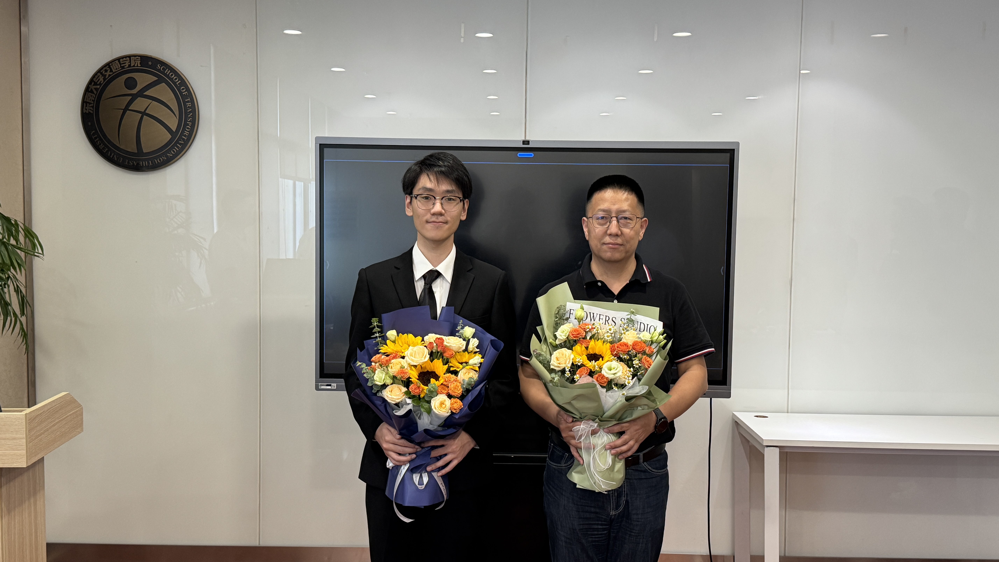

刘志彬 · 个人主页
个人概况
教授，博士生导师。东南大学岩土工程研究所副所长，中国岩石力学与工程学会环境岩土工程分会第五届理事会常务理事，国际工程地质与环境协会（IAEG）会员，中国环境科学学会环境与岩土工程专业委员会委员，江苏省环境科学学会土壤及地下水修复专业委员会委员，江苏省岩土力学与工程学会第九届理事会理事，江苏省岩土力学与工程学会环境岩土工程专业委员会副主任委员兼秘书长。曾获教育部科技进步一等奖1项、江苏省科学技术进步一等奖1项、中国岩石力学与工程学会科技进步一等奖1项、浙江省公路学会科技进步二等奖1项、吉林省公路学会科技进步二等奖1项。在国内外权威学术期刊发表论文100余篇，出版专著3部，参编教材3部，主编团体标准1项，授权国家发明专利10余项。
教育经历
- 1994年09月-1998年07月 · 吉林大学（原长春地质学院），勘察工程系，勘察工程专业，获学士学位
- 1998年09月-2000年12月 · 吉林大学，建设工程学院，地质工程专业，获硕士学位（提前毕业）
- 2001年03月-2004年07月 · 南京大学，地球科学系，水文学及水资源专业，获博士学位
工作经历
- 2004年12月-2006年09月 · 澳大利亚纽卡斯尔大学，岩土与环境工程学科，访问学者
- 2006年11月-2009年04月 · 东南大学，交通运输工程博士后流动站，博士后
- 2009年05月-2014年04月 · 东南大学，交通学院，讲师
- 2013年07月-2013年08月 · 美国里海大学，访问学者
- 2014年05月-2022年04月 · 东南大学交通学院地下工程系，副教授、博士生导师
- 2022年05月-至今 · 东南大学交通学院地下工程系，教授、博士生导师
研究方向
- 环境岩土理论与应用
- 可持续工程材料研究
- 地质工程灾害与防治
- 土工智能信息化技术
国家自然科学基金
●微乳液原位淋洗修复非水相液体污染弱渗透性土层多尺度机理研究(42477176), 主持, 2025.01-2028.12；
●污染场地原位热传导强化气相抽提多场演化与污染物去除机理研究(41877240), 主持, 2019.01-2022.12；
●典型复杂地质条件下泡沫化表面活性剂强化曝气修复机理及应用研究(41672280), 主持, 2017.01-2020.12；
●饱和黏土一维固结变形与无机污染物迁移过程耦合机理研究(41272311), 主持, 2013.01-2016.12；
●工业致污粘性土工程性质演变的微观机制研究(40802065), 主持, 2009.01-2011.12；
●城市化过程中天然沉积土污染演化机理与控制技术研究(重点项目41330641), 子课题负责, 2014.01-2018.12；
科技部重点研发计划
●移动式场地污染快速检测与处置技术及其装备(2022YFC3702502), 子课题负责, 2022.12-2026.10；
●固体废物填埋场地土壤污染风险管控与净化技术(2018YFC1802300), 子课题负责, 2019.01-2022.12；
其他科研项目
●基于空地协同的复杂边坡数字化建模与健康状态评价关键技术研究(2023-ZNJKJJ-10), 主持, 2023.11-2025.10.
●安徽省重点研究与开发计划项目：城市工业污染场地修复和风险管控绿色低碳材料与关键技术研究(2023t07020018), 参与, 2023.07-2026.07.
●红层泥岩边坡风化崩解机理及失稳预警机制研究, 主持, 2021.06-2022.12.
●吉林省交通运输科技项目(2016-1-16-2):季节性冻土区新型毛细导水土工材料抑制路基冻胀破坏技术研究, 主持, 2016.12-2018.12
●江苏省交通科学研究计划(09Y33):海陆交互相新近沉积土地区PHC管桩复合地基技术研究, 主持, 2009.04-2012.05
代表性论文 DB关联
- Zhang, M. et al. "Self-supervised Graph Learning with Contrastive Transformer". NeurIPS 2024 DBLP DOI
- Zhang, M., Li, Y. "Knowledge Graph Completion with Relational Augmentation". ICML 2023 DBLP DOI
- Zhang, M. et al. "Interpretable Graph Neural Networks via Concept Attribution". AAAI 2022 DBLP
专利
- 1. 鹿亮亮, 刘志彬, 白梅, 张锦鹏, 刘朱. 一种热脱附和曝气修复过程的微观观测系统及方法, 申请号CN202011060530.7.
- 2. 白梅, 刘志彬, 张锦鹏, 刘朱. 一种自动测量液面高度的曝气系统及液面高度测量方法, 申请号CN202010862304.4.
- 3. 金权斌, 刘志彬, 蔡昕辰, 白梅, 靳春磊. 一种适用于道路路基的地质聚合物复合相变材料、制备方法及其应用, 申请号CN202010855782.2.
- 4. 刘志彬, 刘锋, 张书建, 雷松林, 张云龙, 黄昊冉. 一种埋放在碎石土路基中的温湿度传感器保护装置及用法，申请号CN201910242969.2.
- 5. 鹿亮亮, 刘志彬, 刘松玉, 王意, 毛柏杨, 刘锋, 唐紫琼. 一种低渗透区VOCs污染地下水原位曝气修复方法. 申请号CN201810677983.0.
- 6. 毛柏杨, 刘志彬, 刘松玉 , 王意, 鹿亮亮. 一种模拟季节冻土中有机污染物运移的模型试验方法. 申请号CN201810762254.5.
- 7. 毛柏杨, 刘志彬, 刘松玉. 污染土柱试验用非饱和带气体多点瞬时同步采样装置. 申请号CN201610060848.2.
- 8. 毛柏杨, 刘志彬, 刘松玉. 一种模拟土中挥发性有机污染物运移一维试验装置. 申请号CN201610060968.2.
- 9. 刘志彬, 方伟, 刘松玉, 杜延军, 陈志龙. 一种地下水曝气修复二维模型试验成像方法. 申请号CN201310497059.1.
获奖
- 2010年，浙江省公路学会科技进步二等奖(R8): 大直径（钉形）双向水泥土深层搅拌桩加固软土地基试验研究
- 2011年，教育部科学技术进步一等奖(R8): 软土地基新型成套加固技术开发研究与工程应用。
- 2012年，东南大学青年教师授课竞赛三等奖。
- 2014年，东南大学教学奖励金，二等奖。
- 2015年，东南大学中交路桥建设奖教金。
- 2015年，江苏省科学技术进步一等奖(R6): 高精度多功能岩土工程原位测试技术研发与工程应用体系。
- 2022年，中国岩石力学与工程学会科技进步一等奖(R14): 污染场地勘察、固化稳定与隔离屏障关键技术研发及其工程应用。
- 2023年，东南大学地下空间奖教金。
- 2025年，吉林省公路学会科学技术二等奖(R3): 季节冻土区新型毛细导水土工材料抑制路基冻融破坏技术研究
主讲课程
- 土力学
- 工程地质与土力学
- 环境岩土工程
- 工程地质实习
- 地基处理
- 轻轨与地铁工程
- 基础工程
- 环境岩土工程
- 高等土工试验
科研动态
祝贺课题组梁佳宇、王琨戈两位研究生获得硕士学位，奔赴新的工作岗位，祝未来前程似锦，大展宏图。

答辩海报 (from梁佳宇)
梁佳宇同学硕士学位论文的题目为《基于无人机倾斜摄影的边坡岩体结构面智能识别与质量评价研究》。

王琨戈同学硕士学位论文的题目为《长期服役高速公路路基劣化及其对路面结构的影响》。
会议将于 2026年11月 在南京召开。